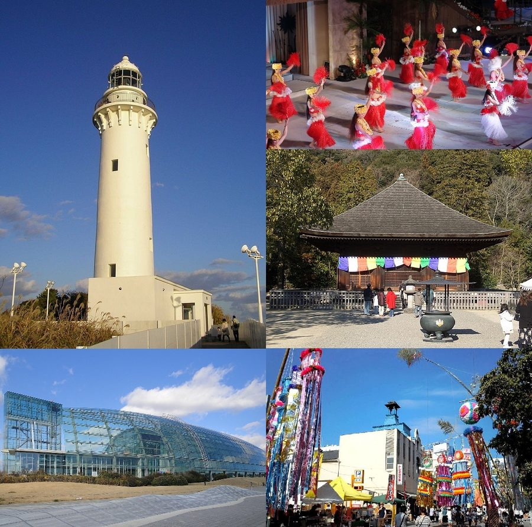
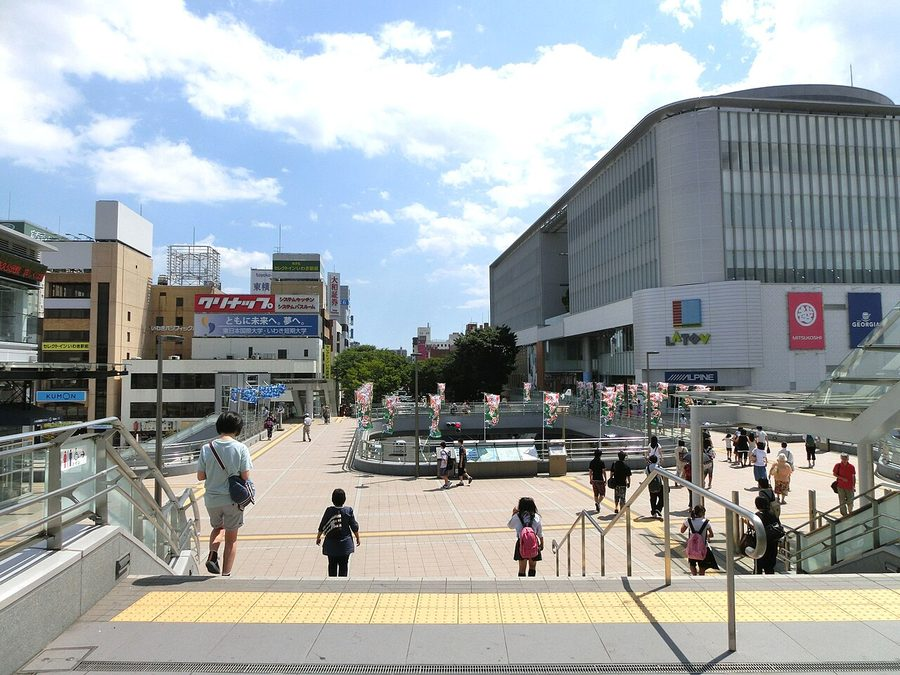
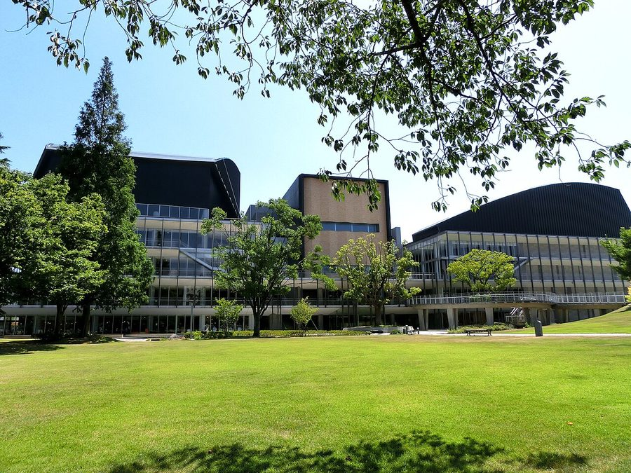

福島県いわき市の日帰り温泉・銭湯・サウナ（38件）
寄り道スポット検索アプリ「ヨッテコ」の収録データから、福島県いわき市の日帰り温泉・銭湯・サウナを営業時間・料金つきで一覧にしました（2026年8月時点）。
最も安いのはいわき湯本温泉 上の湯（150円）。最も遅くまで入れるのは天然温泉 時の湯（翌2:00まで）。朝風呂ならRyokan こいと（5:00開店）。
福島県いわき市はどんなまち？
数字で見る🔍福島県いわき市
まちの横顔



- 地形と気候: 福島県の東南に位置し、面積は1,232.0平方キロメートルと東京都区部（東京23区）の約2倍にあたります。東西39キロメートル、南北51.5キロメートルにわたって市域が広がり、常磐自動車道から西側は阿武隈高地の山間部です。可住地面積の割合は30％と、福島県内の市の中では最も低いまちです。南は茨城県と接し、太平洋に面した60キロメートルの海岸線があります。気候はケッペンの気候区分で温暖湿潤気候（Cfa）に属します。
- 産業と港: 明治初期から本州最大かつ東京に最も近い炭鉱である常磐炭田の開発が進み、常磐線の敷設とともに日本の近代化を支えました。高度経済成長期に石炭から石油へのエネルギー革命が進むと、14市町村の大合併を経て新産業都市の指定を受け、小名浜港を生かした工業都市へと転換しています。製造品出荷額は2022年度に約1兆388億円で、福島県内シェアの約2割を占め、仙台市を上回る東北地方最大の工業都市です。
- 観光: 東北地方で最も集客力のあるリゾート施設スパリゾートハワイアンズをはじめ、アクアマリンふくしま、いわき湯本温泉など多彩な観光資源を持ち、2015年度の市内観光交流人口は東北2位の年間約810万人にのぼります。スパリゾートハワイアンズは、炭鉱会社だった常磐炭礦（現・常磐興産）が1966年に開業させた施設で、2006年に映画『フラガール』の題材にもなりました。
寄り道充実度（全国偏差値）
偏差値・順位は、ヨッテコ収録データ（2026年8月時点・26,033件）を市区町村別に集計した施設数の全国分布（1,728市区町村）から毎回算出しています。カードを押すとカテゴリ別の分析に切り替わります。
日帰り温泉から見た福島県いわき市
市内の日帰り温泉は38件、全国44位タイ（上位2.5%）。——寄り道できる湯の数は、全国でも上位クラス。
- 露天風呂を備える店は29%。全国水準の46%より少なめです。露天よりも内湯——建物のなかでゆっくり浸かる湯が主流のようです。
- 39%——サウナの併設率は、全国の52%に届きません。サウナの有無で選ぶなら、先に確認しておきたい数字です。
- 21時以降も営業する店は24%で、全国水準（40%）を下回ります。明るいうちに入って早く休む、という時間割が見えてきます。
- 29件で確認できた入浴料の中央値は880円。全国水準（650円）との差は35%です。スパリゾートハワイアンズやいわき湯本温泉で知られる、東北屈指の観光交流都市。設備や湯の質を含めた、この土地の相場ということになります。
出典: 施設データ=ヨッテコ収録データ（26,033件・2026年8月時点）。偏差値・全国順位・全国水準は全1,728市区町村の分布から毎回算出。 / 人口=総務省「住民基本台帳に基づく人口、人口動態及び世帯数」（2026年1月1日現在） / 面積=国土地理院「全国都道府県市区町村別面積調」（2026年4月1日時点） / 森林率=農林水産省「2025年農林業センサス（農山村地域調査）」市区町村別林野率（2025年、林野率（林野面積÷総土地面積）） / 年平均気温=気象庁「平年値（1991-2020年）」。市区町村の代表点（国土交通省「大字・町丁目レベル位置参照情報」）から最も近い観測点の値 / まちの解説=日本語版Wikipedia「いわき市」（https://ja.wikipedia.org/wiki/いわき市、2026年8月21日取得、CC BY-SA 4.0）より作成 / 写真=Wikimedia Commons（各キャプションに作者・ライセンスを記載）
曜日別の営業施設数
| 月 | 火 | 水 | 木 | 金 | 土 | 日 |
|---|---|---|---|---|---|---|
| 37 | 37 | 37 | 35 | 38 | 38 | 38 |
木曜日が最も休みが多く（各3件が定休）、年中無休は34件です。※営業時間データのある38件で集計
入浴料金の分布（大人）
| 500円以下 | 4件 | |
| 501〜800円 | 10件 | |
| 801〜1,200円 | 4件 | |
| 1,201円以上 | 11件 |
料金が確認できた29件で集計。
施設一覧
| 施設 | 営業時間 | 料金（大人） |
|---|---|---|
| Cozy Sauna Lab コージーサウナラボ サウナ 完全個室のプライベートサウナ。曲線を活かした内装で、リラックス効果を高めた環境が整備されています。 | 09:00〜21:00 | 3,300円 |
| IWAKI NO SATO ONIGAJO いわきの里 鬼ヶ城 | 09:00〜18:00（水・木休） | — |
| Ryokan こいと 天然温泉露天風呂 いわき湯本温泉の源泉掛け流しにこだわった温泉旅館。3種類の温泉（美人の湯、心臓の湯、熱の湯）を提供。 | 05:00〜08:00 ※曜日により異なる | 1,200円 |
| WELLNESS PARK IWAKI ゆったり館 天然温泉露天風呂サウナ | 10:00〜21:30 | 700円 |
| private sauna さはこ前 サウナ | 12:00〜22:00 | 4,800円 |
| いわき市 三和公民館 ふれあい館 三和ふれあい館内の浴室。汲み上げ地下水を使用した沸かし湯で、男女別施設 | 10:00〜17:00 ※曜日により異なる | 170円 |
| いわき市 南部清掃センター 南部憩いの家 ごみ焼却熱を活用した公営入浴施設。温かいお風呂で日々の疲労を癒せます。 | 10:00〜17:00 | — |
| いわき新舞子ハイツ 天然温泉 | 11:00〜21:00 ※曜日により異なる | — |
| いわき湯本 izumiya 天然温泉露天風呂サウナ | 15:00〜21:00 | 1,300円 |
| いわき湯本温泉 スパホテル スミレ館 天然温泉 いわき湯本温泉のスパホテル。源泉100%かけ流しの温泉で、硫酸塩温泉（硫黄泉）の成分が豊富。 | 14:00〜19:00 | 800円 |
| いわき湯本温泉 上の湯 天然温泉 湯本駅から徒歩約15分の住宅街にある共同浴場。源泉掛け流しで湯温が高いのが特徴。地元から愛される秘湯。 | 16:00〜21:00 | 150円 |
| いわき湯本温泉 古滝屋 天然温泉露天風呂 | 15:00〜20:00 | 3,300円 |
| こびとの森 森のサウナ サウナ 福島県いわき市田人町の豊かな森に囲まれた自然体験型サウナ。森林浴とサウナを組み合わせた独自体験が特徴で、清流で贅沢なクー… | 09:00〜17:10（木休） | 3,080円 |
| スパリゾート ハワイアンズ 天然温泉露天風呂サウナ いわき湯本温泉の豊富な湧出量に支えられた6つのテーマパークから成る大型温泉テーマパーク。毎分3.5トンという国内最大規模… | 10:00〜21:30 ※曜日により異なる | 3,570円 |
| ホテルなみえ 浪の湯 サウナ | 10:00〜23:00 | 800円 |
| ホテルフロンティア サウナ 大浴場・岩盤浴・黄土浴を備えたビジネスホテル。バドガシュタイン鉱石を使用した岩盤浴と韓国産黄土を使用した黄土浴が特徴 | 10:00〜15:00 | 900円 |
| リフレ いわき駅前店 サウナ | 05:00〜24:00 | 880円 |
| 二子浦温泉 天然温泉 | 14:00〜20:00 | 550円 |
| 北投の湯 いわき健康センター 天然温泉サウナ | 09:00〜20:00 | — |
| 原木田温泉 旅館 松扇 天然温泉 | 14:00〜18:00 | 600円 |
| 吉野谷鉱泉 天然温泉 | 08:00〜19:30 | 500円 |
| 吹の湯旅館 天然温泉露天風呂 | 15:00〜20:00 | 3,300円 |
| 四倉舞子温泉 よこ川荘 天然温泉 | 09:30〜16:00 | — |
| 天然温泉 時の湯 天然温泉露天風呂サウナ | 08:00〜26:00 | 600円 |
| 太平洋健康センター 勿来温泉 関の湯 天然温泉露天風呂サウナ 勿来海水浴場すぐそば。雄大な太平洋を望む絶景の湯。 | 10:00〜24:00 | 2,040円 |
| 小名浜オーシャンホテル 照島温泉 天然温泉露天風呂サウナ 太平洋を眼下に望む天然温泉露天風呂が自慢のリゾートホテル。微黄褐色の泉質で神経痛や疲労回復などに効果的。 | 12:00〜22:00 | 1,580円 |
| 川部鉱泉 天然温泉 | 08:30〜17:00 | 500円 |
| 常磐サウナ JOBAN SAUNA サウナ ココロとカラダをととのえる止まり木。週に1度の営業で、薪火と電気の2種類のサウナを備えた施設。 | 13:00〜18:00 ※曜日により異なる | 2,500円 |
| 心つなぐ癒しの宿 斎菊 天然温泉露天風呂 | 15:00〜22:00 | — |
| 心やわらぐ宿 岩惣 天然温泉 いわき湯本温泉の旅館で、展望大浴場からは温泉街が一望できる。源泉かけ流し100%の硫黄泉を一晩中楽しむことができる。 | 15:00〜20:00 | — |
| 旬味の宿 うお昭 天然温泉 日本三古泉のいわき湯本温泉。源泉60℃の効能豊富な無循環天然温泉で湯量日本一。 | 16:00〜20:00 | — |
| 春木屋旅館 天然温泉 | 10:00〜21:00 | 600円 |
| 松柏館 天然温泉 | 14:00〜20:00 | 800円 |
| 田人おふくろの宿 | 11:00〜20:00 | — |
| 白米鉱泉 つるの湯 天然温泉 | 09:00〜16:00（木休） | 600円 |
| 神白温泉 国元屋 天然温泉 pH8.8のアルカリ泉で、スベスベした肌当たりが特徴。飲める温泉として知られており、遠方から多くの人が訪れる。 | 13:00〜21:00 ※曜日により異なる | 1,700円 |
| 雨情の宿 新つた 天然温泉サウナ 詩人・野口雨情ゆかりの老舗温泉宿。全国的に珍しい硫黄泉。竹林に囲まれた庭園露天風呂が自慢。 | 17:00〜20:00 | 1,000円 |
| 高野鉱泉 入の元湯 神泉亭 天然温泉露天風呂 | 13:00〜19:00 | 600円 |